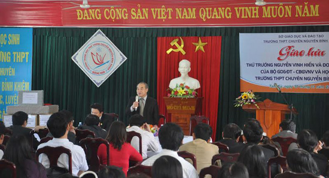

Thứ trưởng Bộ GD-ĐT Nguyễn Vinh Hiển làm việc với Sở GD-ĐT

Lần cập nhật cuối lúc Thứ bảy, 31 Tháng 1 2015 07:46 Viết bởi Administrator Thứ bảy, 31 Tháng 1 2015 07:37
(QNO) - Sáng nay 30.1, tại Trường THPT chuyên Nguyễn Bỉnh Khiêm, đoàn công tác của Bộ GD-ĐT do Thứ trưởng Nguyễn Vinh Hiển dẫn đầu có buổi làm việc với Sở GD-ĐT. Phó Chủ tịch UBND tỉnh Nguyễn Chín cùng lãnh đạo các trường THPT, Trường Phổ thông dân tộc nội trú, trung tâm giáo dục thường xuyên, phòng GD-ĐT tham dự buổi làm việc.

Thứ trưởng Nguyễn Vinh Hiển giao lưu với Hội đồng sư phạm trường THPT chuyên Nguyễn Bỉnh Khiêm
Tại đây, Thứ trưởng Bộ GD-ĐT Nguyễn Vinh Hiển cùng lãnh đạo các vụ Giáo dục THPT, Giáo dục tiểu học, Giáo dục thường xuyên của Bộ GD-ĐT đã trao đổi, giải đáp những băn khoăn của đại diện các trường, trung tâm, phòng GD-ĐT liên quan đến công tác đổi mới GD-ĐT. Bao gồm: đổi mới phương pháp dạy học và kiểm tra, đánh giá, nhất là theo Thông tư 30 ở bậc tiểu học; mô hình trường học mới; việc dạy tích hợp liên môn; kỳ thi tốt nghiệp THPT và tuyển sinh đại học năm 2015.
Dịp này, Bộ GD-ĐT tập huấn triển khai thực hiện các hoạt động chuyên môn qua mạng thông tin trực tuyến; thăm và giao lưu với thầy cô, học sinh Trường THPT chuyên Nguyễn Bỉnh Khiêm, Trường Tiểu học Lê Thị Hồng Gấm (Tam Kỳ).
Xuân Phú (baoquangnam.com.vn)
itnbk.edu.vn
- 08/10/2015 00:00 - Gameshow truyền hình: Học trò xứ Quảng của QRT thắ…
- 22/07/2015 15:14 - Tra cứu điểm thi THPT Quốc gia năm 2015
- 02/04/2015 10:22 - Bộ Giáo dục công bố đề thi minh họa kỳ thi THPT qu…
- 27/02/2015 00:00 - 10 điểm nổi bật của quy chế kỳ thi THPT quốc gia
- 03/02/2015 07:03 - Băn khoăn với đổi mới giáo dục
- itnbk.edu.vn
- 26/01/2015 16:59 - Bộ trưởng Bộ GĐ-ĐT chốt 10 điểm về kỳ thi quốc gia
- 11/11/2014 07:22 - Ra quân dọn vệ sinh hưởng ứng ngày Đô thị Việt Nam
- 18/10/2014 07:08 - Sáng tạo trẻ chuyên Nguyễn Bỉnh Khiêm
- 25/09/2014 00:00 - Những người trẻ mê thiên văn học
- 15/09/2014 08:52 - Trao giải 5 đề tài đạt giải cuộc thi sáng tạo than…